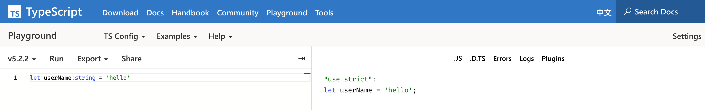

2、Hello TypeScript
TypeScript 是一种由微软开发的自由和开源的编程语言，它是 JavaScript 的一个超集，可以编译成纯 JavaScript。TypeScript 在 JavaScript 的基础上添加了可选的静态类型和**基于类的面向对象编程，**结合了类型检查和静态分析，显式接口，以及类型对编辑器的增强收益，使得TypeScript在JavaScript开发者中使用占比非常高，大有替换之势。
在ts里加入类型，在编译成js的时候擦除类型。在Playground里测试，如下图。

它有如下6个特性。

1、跨平台：TypeScript编译器可以安装在任何操作系统上，如Windows、MacOS和Linux。
2、面向对象语言：TypeScript提供了类、接口和模块等功能。因此，可以为客户端和服务器端开发编写面向对象的代码。
3、静态类型检查：TypeScript使用静态类型，并在编译时帮助进行类型检查。因此，您可以在编写代码时找到错误，而无需运行脚本。
4、可选的静态类型：如果您使用JavaScript的动态类型，则TypeScript还允许可选的静态类型。
5、IDE支持：无论VSCode还是WebStorm等都有更好的支持。
6、ES6新特性支持：TypeScript包含了计划中的ECMAScript 2015（ES 6、7）的大部分功能，如类、接口、箭头函数等。
其实，TypeScript真正厉害的是他的背景，出身名门，同辈父辈都是狠人。

1、背后金主是微软，它就是地主家的小儿子。
2、亲爹是安德斯·海尔斯伯格（Anders Hejlsberg），1960年12月出生于丹麦哥本哈根，曾在丹麦科技大学学习工程学，计算机科学家。 Turbo Pascal编译器的主要作者，Delphi、C#和TypeScript之父。他是创造Borland传奇的男人。
3、它的哥哥是VSCode，干翻Atom，在2021年开发人员占比就超过了50%，（总人数2400万，有1400万安装了），其他语言工程师我不清楚，至少前端Node绝大部分都是VSCode或者VSCode+WebStorm双修。
4、他大爷（哥哥的爸爸）是Erich Gamma，《设计模式：可复用面向对象软件基础》的四人帮之一。